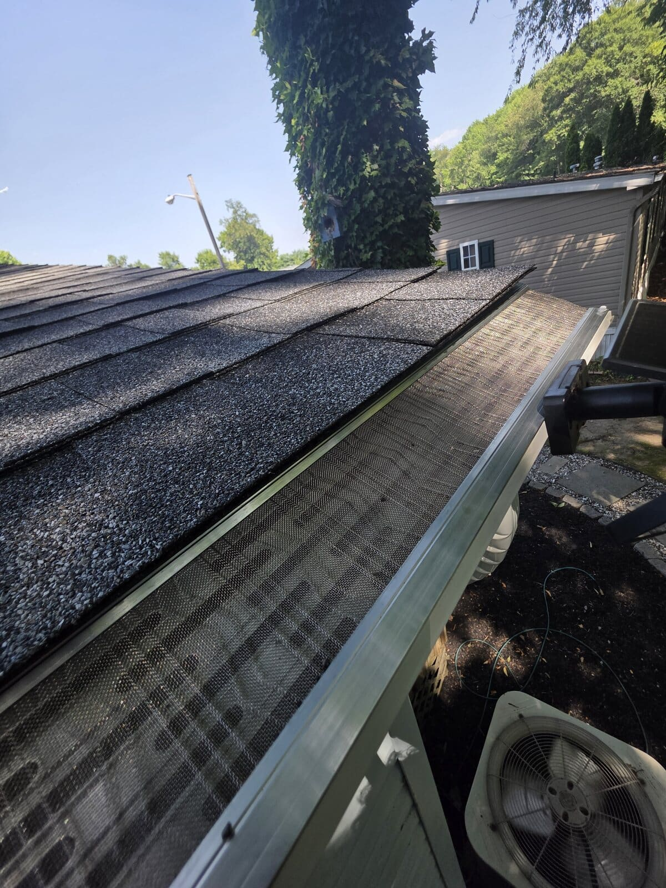

Completed project update · July 2026
Recent Gutter Guard Projects in Yardley, West Deptford & Aberdeen
Homeowners do not need more generic promises about gutter protection—they need to see what a finished installation looks like on real homes. This month, CleanGutters Lighting completed gutter guard projects in Yardley, Pennsylvania; West Deptford, New Jersey; and Aberdeen, Maryland.

Each project had different rooflines and drainage needs, but the goal was the same: keep leaves and debris out of the gutter channel while allowing rainwater to move through the system. Properly fitted micro-mesh gutter protection helps reduce recurring clogs, overflow, and the need to climb a ladder for routine cleanouts.
Yardley, PA: multi-level roofline protection
Our Yardley project included coverage across primary and multi-level rooflines. The finished detail matters on this kind of home: guards need to follow each gutter run cleanly so water can reach the downspouts rather than spilling over the edge.
West Deptford, NJ: long continuous gutter runs
In West Deptford, the completed project shows a long roofline run and close finished mesh detail. Long runs make dependable drainage especially important during heavy South Jersey storms, when even a localized clog can force water where it does not belong.
Aberdeen, MD: clean roofline coverage
The Aberdeen installation added edge-to-edge micro-mesh coverage along the home’s rooflines. It is a good example of the clean finished appearance homeowners want without changing the character of the exterior.
What to look for when choosing gutter protection
A gutter guard should be fitted to the existing gutters and roof edge—not treated as a one-size-fits-all add-on. Before recommending a solution, we look at roof pitch, the type of debris around the home, gutter condition, downspout flow, and the full run of each roofline. The right installation helps water move where it belongs while keeping the system easier to maintain.
CleanGutters Lighting installs gutter protection throughout South Jersey, Eastern Pennsylvania, Northern Delaware, and Northeastern Maryland. Explore our gutter guard options or view our growing list of service areas.
Want a gutter guard estimate?
Call 856-874-6640 or request a free estimate for a professional assessment of your roofline and gutters.